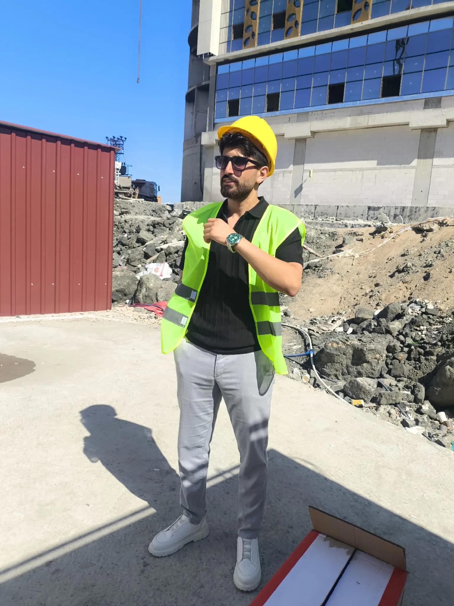
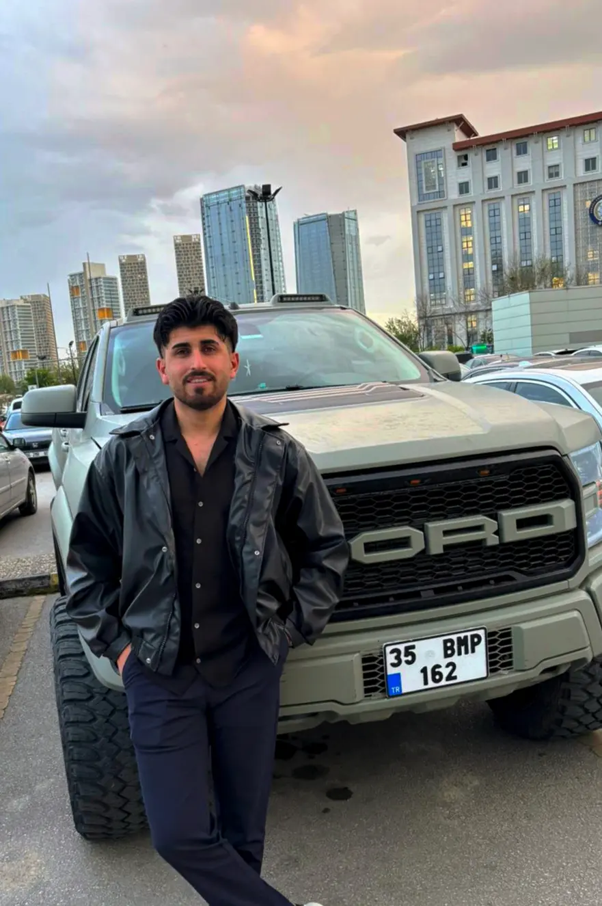
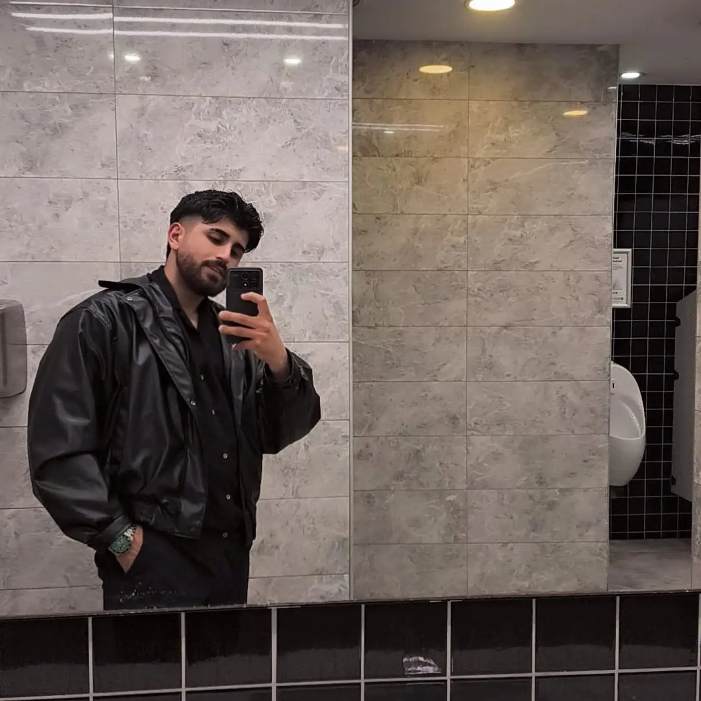

Diyarbakır & Ergani
Havalandırma Ustası
Nurettin Bıçak
5 yıllık saha ustalığı ile restoran davlumbazlarından sanayi tesislerine, galvaniz hava kanallarından sessiz salyangoz fan sistemlerine kadar anahtar teslim profesyonel çözümler sunuyoruz.
5 Yıllık Ustalık
Kusursuz el işçiliği
Hızlı Mobil Servis
Aynı gün yerinde keşif
Garantili Montaj
Sızdırmaz & sessiz çalışma

5+ Yıl
Saha Tecrübesi
%100 Memnuniyet
Sıfır Duman & Maksimum Emiş

Mobil Keşif Filosu
Nurettin Bıçakİşin Ehli, Sözünün Eri: Nurettin Bıçak
Diyarbakır Ergani merkezli faaliyet gösteren Havalandırma Ustası Nurettin Bıçak, 5 yılı aşkın süredir bölgenin en zorlu mekanlarına temiz hava ve güçlü tahliye çözümleri kazandırmaktadır.
Lokantalardan fırınlara, kafelerden ağır sanayi atölyelerine kadar her mekanın hava debisi, kanal eğimi ve motor çekiş gücü özel mühendislik titizliğiyle hesaplanır. İmalatını yaptığımız galvaniz sac kanallar sızdırmaz, motorlarımız sessiz ve uzun ömürlüdür.
Milimetrik Ölçü & İmalat
Mekanınıza özel projeli galvaniz kanal üretimi
Yangın & İtfaiye Uygunluğu
Yönetmeliklere uygun yangına dayanıklı baca sistemleri
%100 Koku & Duman Tahliyesi
Sulu filtre ve elektrostatik baca çözümleri
Dürüst & Şeffaf Fiyat
Sürpriz masrafsız anahtar teslim fiyatlandırma
Profesyonel Havalandırma Hizmetleri
Diyarbakır, Ergani ve çevre bölgelerde en yüksek standartta galvaniz sac, paslanmaz çelik ve yüksek emişli motorlarla ürettiğimiz başlıca sistemler:
Davlumbaz & Baca Sistemleri
Restoran, lokanta, kebap ocakbaşı ve kafeler için paslanmaz krom veya galvaniz davlumbaz imalatı, yangın emniyetli yağ tutucu filtreler ve güçlü duman tahliyesi.
Fiyat Teklifi AlGalvaniz & Spiral Hava Kanalları
Yüksek basınç dayanımlı spiral spiro borular, flanşlı kare galvaniz kanallar ve menfezler. Minimum sürtünme kaybı ve estetik endüstriyel görünüm.
Fiyat Teklifi AlSalyangoz & Emiş Fan Motorları
Yüksek debili radyal salyangoz fanlar, çatı tipi dikey atışlı egzoz motorları ve kanal içi sessiz fan kurulumları. Titreşimsiz montaj ve sessiz performans.
Fiyat Teklifi AlSulu Baca & Koku Filtreleri
Çevre şehircilik ve belediye kurallarına %100 uyumlu sulu yıkama filtreleri, aktif karbon filtreler ve elektrostatik duman tutucular ile komşularla sıfır problem.
Fiyat Teklifi AlFabrika & Atölye Sistemleri
Kaynak dumanı tahliyesi, kimyasal buhar emişi, marangoz ve tekstil atölyeleri için toz toplama borulama sistemleri ve taze hava besleme hatları.
Fiyat Teklifi AlOtopark & Sığınak Sistemleri
Kapalı otoparklarda karbonmonoksit birikimini önleyen jet fan sistemleri, acil yangın duman tahliye motorları ve sığınak taze hava filtre üniteleri.
Fiyat Teklifi AlFırın & Taş Fırın Bacaları
Ekmek fırınları, pide ve lahmacun fırınları için yüksek sıcaklığa ve kreme dayanıklı çift cidarlı yalıtımlı paslanmaz baca imalat ve montajı.
Fiyat Teklifi AlBakım, Temizlik & Fan Onarımı
Tıkanmış baca ve davlumbaz yağ temizliği, fan kayış-kasnak değişimi, motor rulman bakımı ve ses yapan sistemlerin revizyonu.
Fiyat Teklifi AlMekanınıza Özel Fiyatı Anında Hazırlayın
Mekan tipinizi ve ihtiyacınızı seçin; Nurettin Usta'ya doğrudan detaylı WhatsApp keşif talebi gönderin!
Keşif Mesajınız Hazırlandı
Seçilen mekan ve sistem için keşif talebi oluşturuldu.
Sahadan Kareler & Referans Görseller
Saha keşiflerimiz, mobil servis filomuz ve işimize duyduğumuz titizlik. Büyütmek için fotoğrafların üzerine tıklayabilirsiniz.
Büyük Ölçekli Şantiye Keşfi
Mekanik tesisat projelerinde doğrudan sahada milimetrik ölçü ve kanal güzergahı tespiti.
Hızlı Saha Müdahale & Lojistik
Ergani, Diyarbakır ve çevre ilçelere tam donanımlı araç filomuzla aynı gün yerinde servis.
Nurettin Bıçak • Havalandırma Ustası
5 yıllık tecrübe, müşteri memnuniyeti ve garantili işçiliğin güvencesi.
4 Adımda Anahtar Teslim Havalandırma
İlk telefonunuzdan teslimata kadar her aşamada şeffaf, güvenilir ve garantili işçilik.
Ücretsiz Keşif
Mekanınıza bizzat gelerek hava debisini, duman yoğunluğunu ve kanal geçiş hatlarını inceliyoruz.
Projelendirme & Teklif
Mekana en uygun motor gücünü ve kanal kesitini belirleyip net, sürprizsiz fiyat teklifimizi sunuyoruz.
İmalat & Hassas Montaj
1. kalite galvaniz sacdan sızdırmaz kanalları üretiyor, en ince detayına kadar titizlikle monte ediyoruz.
Test & Teslimat
Hava akış hızını ve sessizlik testlerini yapıp sıfır sorun garantisiyle sistemi teslim ediyoruz.
Bölge Esnafı Ne Diyor?
Diyarbakır ve Ergani'de tamamladığımız yüzlerce projeden işletme sahiplerinin geri bildirimleri:
"Ergani'deki kebap salonumuzun baca çekişinde büyük problem vardı, içerisi sürekli duman altı oluyordu. Nurettin Usta geldi, kanalları yeniden hesaplayıp güçlü bir salyangoz fan taktı. Şimdi en ufak bir duman kokusu kalmadı. Ustalığını ve ilgisini sonuna kadar takdir ediyorum."
"Diyarbakır OSB'deki metal işleme atölyemizin toz ve duman tahliyesi için çalıştık. 5 gün gibi kısa bir sürede spiral kanalların tamamını eksiksiz monte etti. Söz verdiği saatte gelen, temiz ve dürüst çalışan nadir ustalardan biri."
"Kafemizin taze hava ve egzoz sistemi için teklif aldık. Diğer ustaların iki katı fiyat verdiği işi kaliteli malzeme ve çok uygun fiyata bitirdi. Fanlar son derece sessiz çalışıyor, müşterilerimiz çok memnun. Teşekkürler Nurettin Usta!"
Sıkça Sorulan Sorular
Diyarbakır ve Ergani havalandırma projeleri hakkında en çok merak edilen sorular ve yanıtları:
Diyarbakır ve Ergani'de yerinde ücretsiz keşif yapıyor musunuz?
Evet, Havalandırma Ustası Nurettin Bıçak olarak Diyarbakır merkez, Ergani ve çevre tüm ilçelere (Çermik, Dicle, Maden vb.) bizzat gelerek mekanınızı yerinde inceliyor ve ücretsiz keşif hizmeti sunuyoruz.
Restoran ve kebap ocakları için davlumbaz baca çekiş garantisi var mı?
Kesinlikle. Mekanın büyüklüğüne ve ızgara ocak ölçüsüne göre doğru motor gücü, salyangoz fan ve sızdırmaz galvaniz kanal hesabı yapılarak %100 duman tahliye ve sıfır koku garantisi sağlanır.
Havalandırma montajı ne kadar sürer?
Küçük ve orta ölçekli kafe, restoran ve fırın projelerimiz genellikle 1 ile 3 iş günü içinde imalat ve montajı tamamlanarak anahtar teslim çalışır vaziyette teslim edilir.
Fiyat teklifi nasıl alabilirim?
Sitemizdeki WhatsApp keşif ve fiyat hesaplayıcısını kullanarak veya +90 534 293 62 87 numaralı telefonumuzu arayarak aynı gün içerisinde net ve sürprizsiz fiyat teklifi alabilirsiniz.
Bize 7/24 Ulaşın
Diyarbakır, Ergani ve tüm çevre ilçelerde havalandırma keşfi ve projeleriniz için bir telefon kadar yakınız.
Telefon Numarası (Doğrudan Arama)
+90 534 293 62 87WhatsApp Hattı (7/24 Aktif)
+90 534 293 62 87Hizmet Bölgesi & Konum
Ergani / Diyarbakır • Çevre İl ve İlçeler
Çalışma Saatleri
Pazartesi - Pazar: 07:30 - 21:00 (Acil Durumlarda 7/24)
Doğrudan Mesaj Gönder
Aşağıdaki formu doldurup gönderdiğinizde mesajınız doğrudan WhatsApp üzerinden Nurettin Usta'ya iletilir.